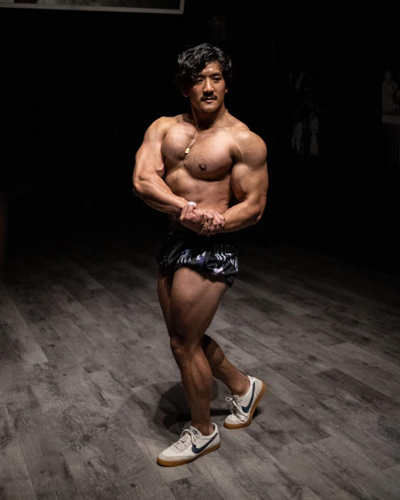

Beginner / gym fixes
JPG Coaching
JP Gallardo makes fast, approachable exercise corrections for common gym mistakes, machine setup, and exercise order.
Full profile
Background: Professional fitness coach. Rapid-fire TikTok edits with clear "Do This, Not That" visual cues.
Core philosophy: Hyper-practical application. Corrects common gym mistakes (exercise order, machine setups) to maximize daily gym efficiency. Strips away jargon for simple, immediate adjustments.
Platform: 4.5M+ TikTok/IG followers. 1-on-1 coaching.